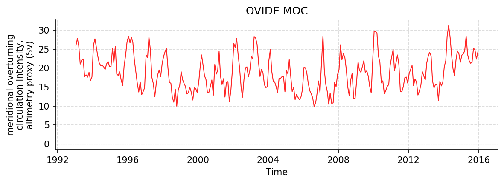

OVIDE Datasets
46195.nc
Dataset Overview
Project: OVIDE
Description: Time series of the Meridional Overturning Circulation intensity across the Greenland-Portugal A25 OVIDE line
Source File: 46195.nc
Data Product: Monthly MOC-intensity time series across the Greenland-Portugal A25 OVIDE line, derived from AVISO altimetry and Argo/ISAS temperature and salinity
License: CC-BY-NC-4.0
Date Created: 10-Oct-2016 11:37:48
Time Coverage: 1993-01-15 to 2015-12-15
Record Length: 276 observations (22.9 years)
Sampling Frequency: monthly
Citation:
Mercier Herle, Daniault Nathalie, Lherminier Pascale (2016). Time series of the Meridional Overturning Circulation intensity at OVIDE. SEANOE. https://doi.org/10.17882/46445
Acknowledgement:
The authors request that Mercier et al. (2015, Progress in Oceanography) be cited alongside this dataset.
Dataset Visualization
{kind=link}

Time series plot for OVIDE dataset.
Dataset Statistics
Total Variables: 3
Total Coordinates: 1
Dataset Size: 0.01 MB
Coordinate Information
The following table shows information about the dataset coordinates in the standardised version, including coordinate name remapping from the original, if any:
Coordinate |
Description |
Units |
Size |
Min Value |
Max Value |
Missing % |
|---|---|---|---|---|---|---|
date_AVISO → TIME |
Time |
seconds since 1970-01-01T00:00:00Z |
(276,) |
1993-01-15 |
2015-12-15 |
0.0% |
Variable Information
The following table shows the mapping from original variable names to standardized names, along with key statistics for each variable.
Variable |
Description |
Units |
Size |
Min Value |
Max Value |
Missing % |
|---|---|---|---|---|---|---|
MOC_index_ISAS → MOC_SIGMA1 |
meridional overturning circulation intensity: MOC index over 2002-2015: AVISO surface velocities combined with the time-varying Argo/ISAS-derived geostrophic velocity shear; maximum of the overturning streamfunction in sigma1 density space |
sverdrup |
(276,) |
8.49 |
30.61 |
39.1% |
err_index_ISAS → MOC_SIGMA1_ERR |
meridional overturning circulation intensity, ensemble standard deviation: Standard deviation of a 100-member ensemble of MOC index estimates over 2002-2015, from random perturbations of the ISAS fields and altimetry-derived surface dynamic heights |
sverdrup |
(276,) |
1.81 |
3.03 |
39.1% |
MOC_index_AVISO → MOC_SIGMA1_PROXY |
meridional overturning circulation intensity, altimetry proxy: MOC index over 1993-2015: AVISO surface velocities combined with the 2002-2015 mean Argo/ISAS interior (fixed-interior altimetry proxy); maximum of the overturning streamfunction in sigma1 density space |
sverdrup |
(276,) |
9.91 |
31.18 |
0.0% |
Metadata (edits applied noted)
The following metadata describes this dataset:
Title: Time series of the MOC intensity across the Greenland-Portugal A25 OVIDE line
Summary: Time series of the Meridional Overturning Circulation intensity across the Greenland-Portugal A25 OVIDE line
Description*: Time series of the Meridional Overturning Circulation intensity across the Greenland-Portugal A25 OVIDE line
Program*: OVIDE
Project*: OVIDE
License*: CC-BY-NC-4.0
Acknowledgment: The authors request that Mercier et al. (2015, Progress in Oceanography) be cited alongside this dataset.
References: Mercier et al., PIO 2015 http://dx.doi.org/10.1016/j.pocean.2013.11.001
Weblink*: https://www.seanoe.org/data/00353/46445/
Data Product*: Monthly MOC-intensity time series across the Greenland-Portugal A25 OVIDE line, derived from AVISO altimetry and Argo/ISAS temperature and salinity
Time Coverage Start*: 1993-01-15
Time Coverage End*: 2015-12-15
Contributor Name*: Herlé Mercier, Nathalie Daniault, Pascale Lherminier
Contributor Role*: originator, originator, originator
Contributor Role Vocabulary*: https://vocab.nerc.ac.uk/collection/G04/current/
Contributor Email: , ,
Contributor Id: https://orcid.org/0000-0002-1940-617X, https://orcid.org/0000-0001-8357-6627, https://orcid.org/0000-0001-9007-2160
Contributing Institutions*: Laboratory for Ocean Physics and Satellite remote sensing (LOPS)
Contributing Institutions Vocabulary: https://edmo.seadatanet.org/report/4536
Contributing Institutions Role:
Conventions*: CF-1.8, ACDD-1.3, OceanSITES-1.5
featureType*: timeSeries
featureType_vocabulary: https://cfconventions.org/cf-conventions/v1.6.0/cf-conventions.html#_features_and_feature_types
Source File*: 46195.nc
Source Path*: ~/.amocatlas_data/46195.nc
Source Url*: https://www.seanoe.org/data/00353/46445/data/46195.nc
Date Created: 10-Oct-2016 11:37:48
Date Modified: 2026-08-01T00:00:00Z
Processing Software: http://github.com/AMOCcommunity/amocatlas
Processing Version: v0.4.0
Processing Datasource*: ovide
Applied Variable Mapping: {‘date_AVISO’: ‘TIME’, ‘MOC_index_ISAS’: ‘MOC_SIGMA1’, ‘MOC_index_AVISO’: ‘MOC_SIGMA1_PROXY’, ‘err_index_ISAS’: ‘MOC_SIGMA1_ERR’}
Description1: The MOC monthly time series was generated following the method described in Mercier et al. (2015).
Description2: It combines sea surface velocities from altimetry with geostrophic velocity vertical shear from Argo to compute a meridional overturning stream function.
Description3: MOC index is defined as the maximum of this meridional overturning stream function.
Description4: The sea surface velocities and the geostrophic velocity shear are estimated from AVISO and from ISAS data, respectively.
Description5: The ISAS time series starts on January 2002 and ends on December 2015 (one MOC estimate per month).
Description6: Two MOC indexes are provided: The first index (MOC_index_AVISO) was computed over 1993-2015, combining AVISO with the 2002-2015 monthly mean velocity field derived from ISAS.
Description7: The second index (MOC_index_ISAS) was computed over 2002-2015, combining AVISO with the monthly velocity fields derived from ISAS.